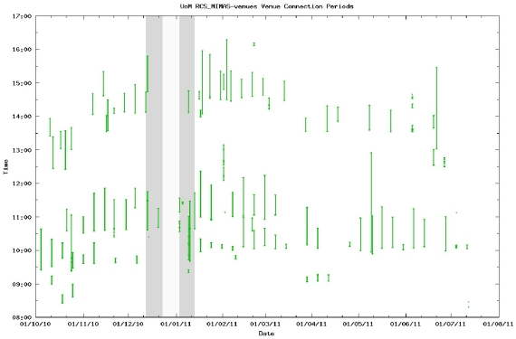
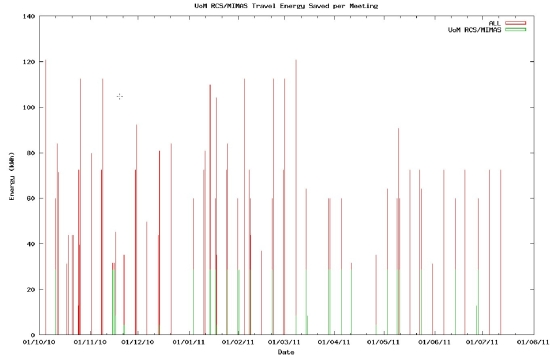
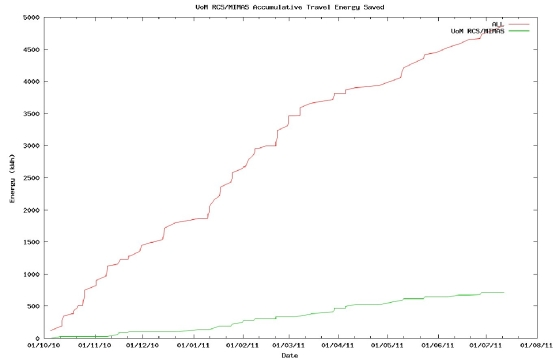

Case Study 4: CO2 - loads of it
One of the continual requests we have when considering the use and analysis of the activity of
video conferencing sessions is to clarify and quantify the CO2 savings. This is a lot harder than
initially considered as often meetings may be planned to be regular, but some may not actually
exist; and some may not exist and actual attendance may vary from plan.
We are now able to mash-up the actual meetings occurred, cross correlated this with virtual venue
meeting spaces to define the other participating physical nodes; and then use open access
distance calculations to specify equivalent travel distances. All the major physical nodes in the UK
needed to be geo-tagged, which was done for visualization purposes over the last couple of years
and this data can be reused.
An Example Test-case: The CO2 savings reports have been calculated in KWh as this is now
considered more universal. It is also simple on the web for a reader to find a calculator, depending
on fuel capture type, which can then inversely calculate the CO2 values saved, if needed. A
sample graph, for the RCS/MIMAS physical AG room node, is shown below that illustrates the
process. The activity data for meetings within this room is about 65% work related to the NGS
(National Grid Service) meetings. The list of all the meetings from the physical room node and then
correlates these with the virtual venues can be given. An estimate of the number of people meeting
in the same virtual venue, is used to assume the cost of a face- to- face meeting at the cheapest
physical location, when travelling by car (1KWh is about 10 miles driving).
The first graph shows all the meetings in a period just under ten months.

Over this time there were 147 meetings within 18 virtual venues, with the average length of these
meetings being 29 minutes 12 seconds. For each meeting the energy saving can be calculated:

and finally a cumulative energy saving can be displayed.

We could say the AG video conferencing sessions over the last ten months, within that room have
saved approaching 50,000 miles of car travel! (Although this is not really an accurate statement).
There are many reasons why this is not a true saving.
- Meetings may not have occurred, if the equipment was not there. A budget is required to meet face- to-face
- There may have been fewer possibly longer face-to-face meetings reducing the KWh
- Costs of the physical room nodes and equipment have a kWh footprint
- Other even cheaper methods may have been used for example email or phone
Overall a multi-user and mixed purpose physical room node even with minimal Access Grid usage
is likely to have an impact on the environment. Further work will need to be done in order to
calculate if and how significant this is.